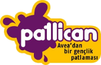
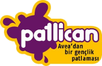

fka dev
Hello, I'm Fatih. I live in Istanbul and work as a front-end developer at Hepsiburada.com. I love writing JavaScript and being part of its evolution. I'm also the organizer of Jstanbul, the first JavaScript conference in Turkey, and writer of the Modern JavaScript book.
§links
I'm trying to be a social person.
- Twitter, my recent thoughts about everything and anything.
- GoodReads, "Good friends, good books, and a sleepy conscience: this is the ideal life." ― Mark Twain.
- Blog, I'm trying to share my ideas and experience.
- GitHub, my code lives here.
- LinkedIn, the most professional one.
- Instagram, "There is nothing insignificant in the world. It all depends on the point of view." — Johann Wolfgang von Goethe
§professional experience
I like to work with leading companies.
- Hepsiburada.com, is the biggest e-trade company in Turkey.~ Oct '14 - present
Front-end Developer
- webBox, is a software development, design, training and consultancy company.~ Mar '14 - Oct '14
Lead Front-end Developer
- MetGlobal, is the biggest hotel inventory provider in Turkey.~ Nov '13 - Mar '14
Lead Front-end Developer
- Koding one of the biggest online IDE, in San Francisco, CA / USA. ~ Apr '13 - Nov '13
Front-End focused Software Developer.
- Markafoni, is the biggest private shopping company in Turkey. ~ Jan '12 - Apr '13
JavaScript focused Front-End Developer.
- Pozitim, is one of leading mobile GSM VAS companies in Turkey. ~ Mar '09 - Jan '12
PHP/Zend Framework focused Core Back End Developer.
- Isn't it enough?
§books & publications
My editor is not only for writing codes... — Verba volant, scripta manent.
- Modern JavaScript — Dikeyeksen Publications Buy from Idefix Buy from Amazon — ISBN: 978-605-86660-3-0
§organizations
Community organizations, hackathons, meet-ups, etc. — Res publica non dominetur.
- HackING: ING Bank Hackathon - Organizer ~ 31 Oct 2014
- Jsist: Istanbul JavaScript Conference - Organizer ~ 27 - 28 Sep 2014
- CodeFront, Austria: Front-end Development Conference - Co-Organizer ~ 10 May 2014
- Kod.io Linz, Austria: Developer Conference - Crew Member ~ 1 March 2014
- Kodathon 2013: The Hackathon - Crew Member ~ 21 - 22 December 2013
- Kod.io: Developer Conference - Co-organizer ~ 26 October 2013
- Project X: CTF White Hat Competition - Consultant ~ 25 September 2013
- JsPyConf: Modern Web Technologies Conference — Co-organizer, ~ 30 - 31 March 2013
- Jstanbul: JavaScript Conference — Organizer, Event Manager, ~ 28 - 29 July 2012
§talks & tutorships
I love talking about JavaScript.
- Advanced JavaScript — Bilginc IT Academy — Tutor, ~ 7 - 11 Jul 2014
- Front-end Technologies Panel — WTK İzmir — Panelist, ~ 17 May 2014
- CoffeeScript and Backbone — webBox.io — Tutor, ~ 18, 19 January 2014
- Next Generation Web Apps — DevFest Turkey — Speaker, ~ 2 November 2013
- JavaScript Basics — Istanbul Hackerspace — Tutor, ~ 17, 19, 24, 26 April 2013
- Backbone Dev. Workshop — Özgür Web Günleri — Speaker, ~ 19 - 20 October 2012
- Backbone Fundamentals — Jstanbul — Speaker, ~ 28 - 29 July 2012
§online talks
I love talking about JavaScript, online.
- Front-end Technologies Panel — WTK İzmir — Panelist, ~ 17 May 2014
- Next Generation Web Apps — DevFest Turkey — Speaker, ~ 2 November 2013
- Front-end Interview — NedirTV - DevelopersTube — Speaker, ~ 22 October 2013
- FirebaseIO — Markafoni 22dk [Part 2] [Part 3] — Speaker, ~ 3 February 2013
§contact
Contacting people are super easy now.
You can contact me any time via fka {at} fatihak {dot} in, but @fkadev will be way easier.
Also you can ask me any questions at ask.fm/fkadev
§contributions
I am proud of taking part in these huge software projects:

 
